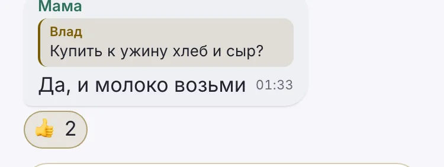
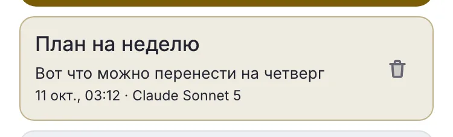
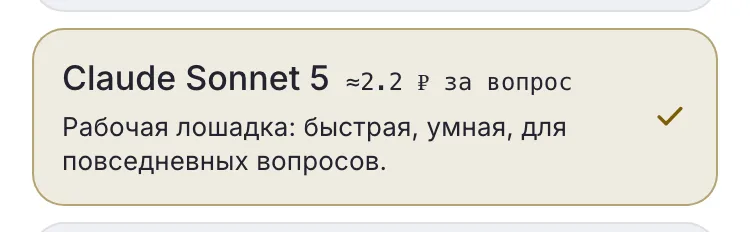
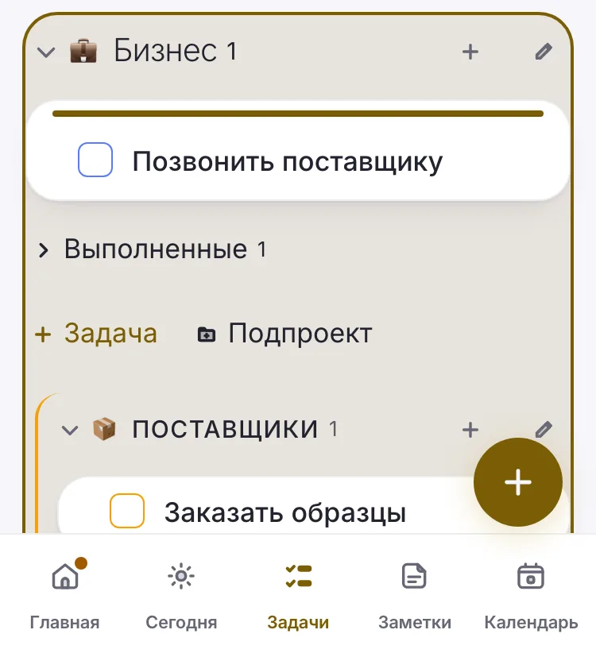
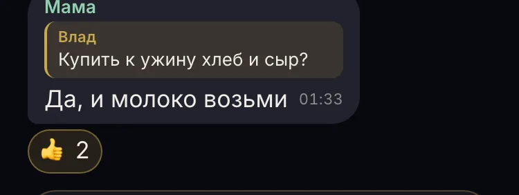
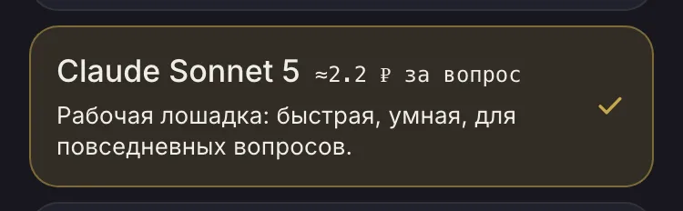
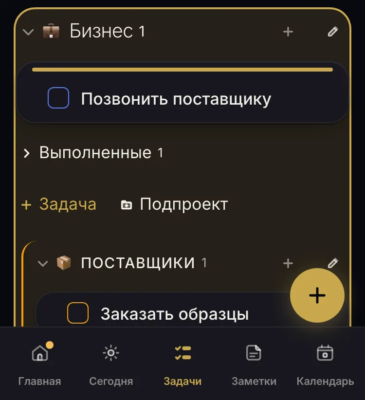

А: на подложке — основной текст
Светлая
Чат: цитата 11.55 · число реакции 12.14

ИИ, список чатов: 13.04

ИИ, модель: 13.04

Задачи, цель переноса: 12.14, серое темнеет на время жеста

Тёмная
Чат: цитата 10.30 · число реакции 13.94

ИИ, список чатов: 11.77

ИИ, модель: 11.77

Задачи, цель переноса: 13.94, серое светлеет на время жеста
